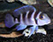

COMO ELEGIR UN PEZ SANO
Aves
Peces
Gatos
Hamsters
Perros

![• Que las aletas no las tengan pegadas.
• Que el pez este activo. Un pez que está constantemente parado en el fondo suele ser un pez que está enfermo o incluso podría indicarnos que es muy viejo.
• Que no nade excesivamente rápido y/o golpeándose contra los cristales.
• Que no le falten escamas
• Que no tenga puntos (blancos) ya que esto es una enfermedad altamente contagiosa.
• Que no se rasque con la decoración o la grava.
• Que nade de forma horizontal.
• Que no este constantemente escondido.
• Que los ojos sean claros y brillantes, es decir, que no estén blanquecinos ni hinchados, esto se sabe comparándolo con el resto de peces de su especie.
• Que no saque la cabeza para respirar.
• Que no tenga el vientre hundido
• No tenga la columna torcida.
• En el caso de peces como los discos, que no estén oscurecidos.](images/u286-34.png)